Fantascapes
Blender | Photoshop | Adobe InDesign
About
"Fantascapes: Excerpts From Distant Lands" is a short book that includes 3D renderings of fantastical landscapes. Each landscape is accompanied by an excerpt from a fictional, in-universe book that gives context and a story to the landscape.
This was created in my sophomore year of college in a collaborative book project with fellow students. We were tasked with creating a suite of books with the theme being fantasy.
Hover over the right side of the book cover to get an interactive flip book.
This was created in my sophomore year of college in a collaborative book project with fellow students. We were tasked with creating a suite of books with the theme being fantasy.
Hover over the right side of the book cover to get an interactive flip book.
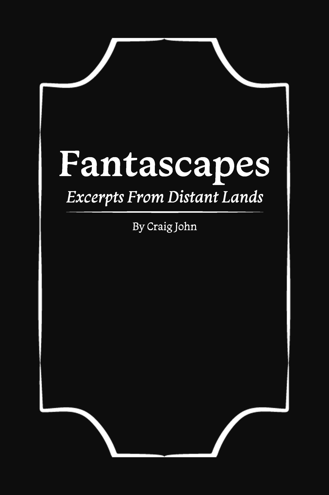
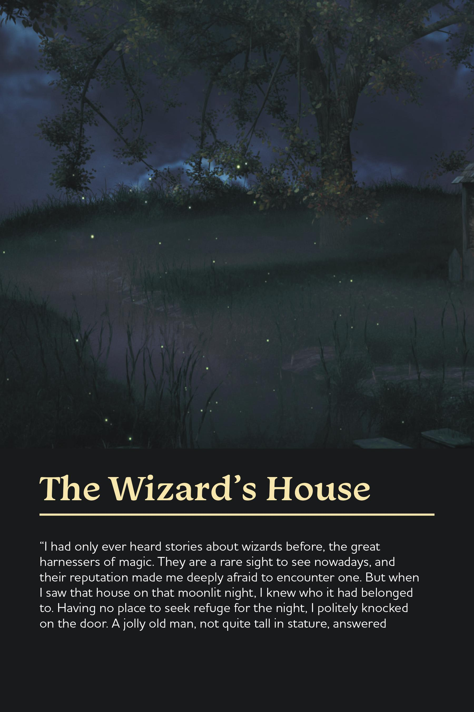
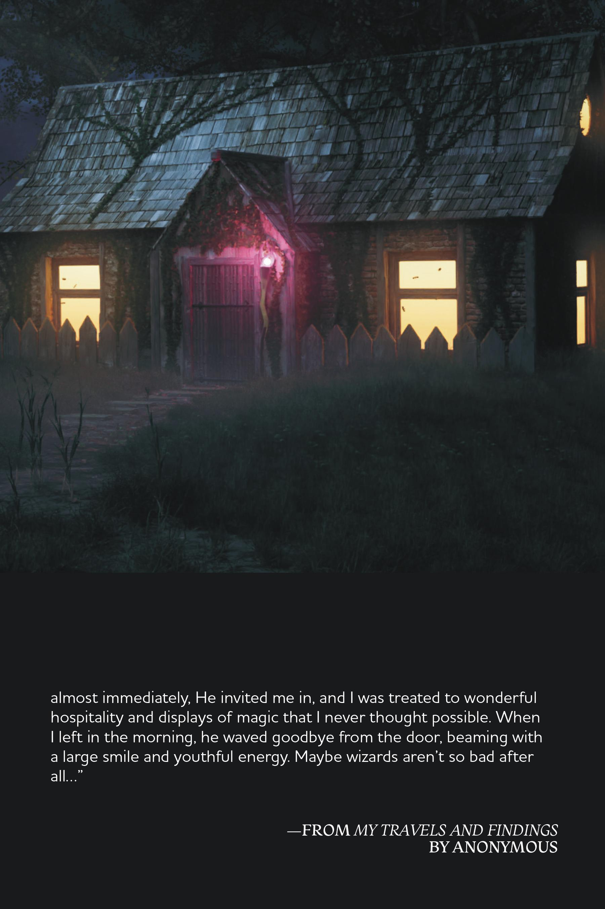
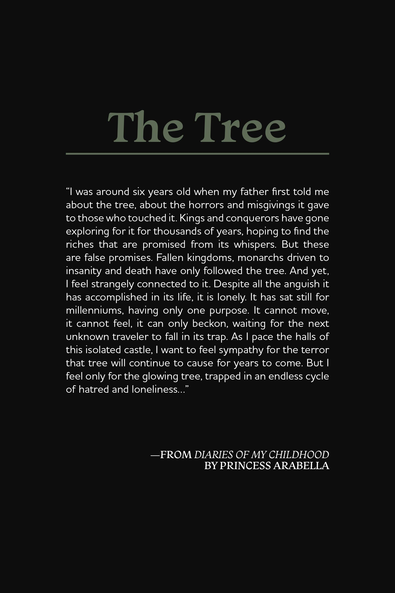
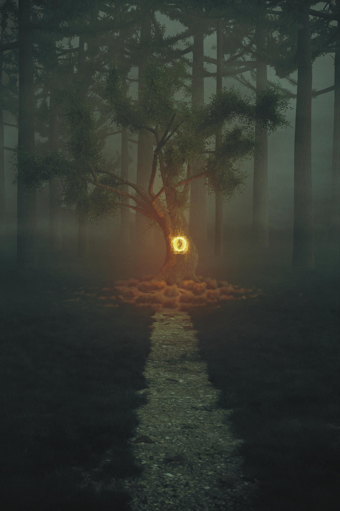
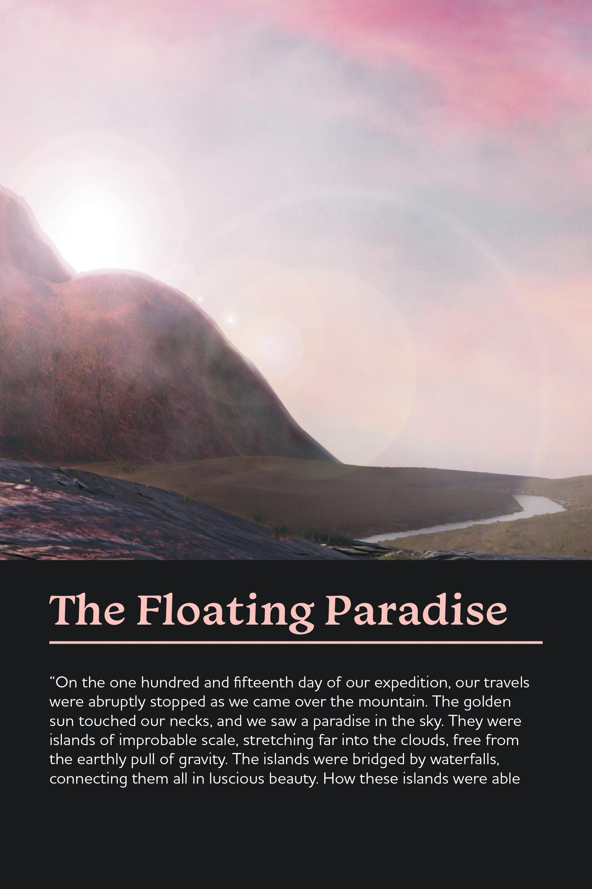
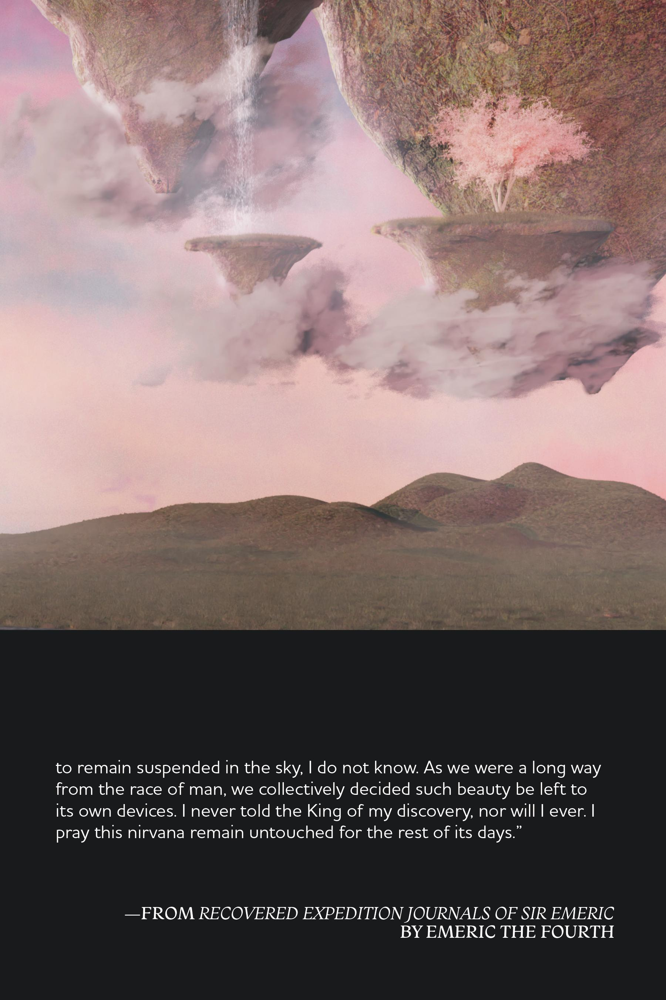
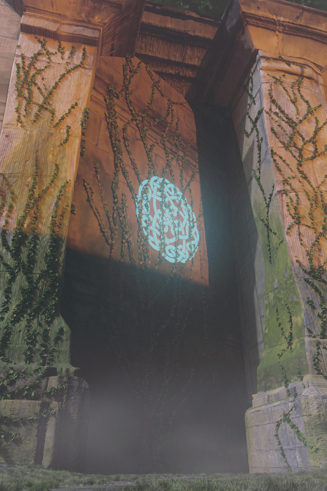
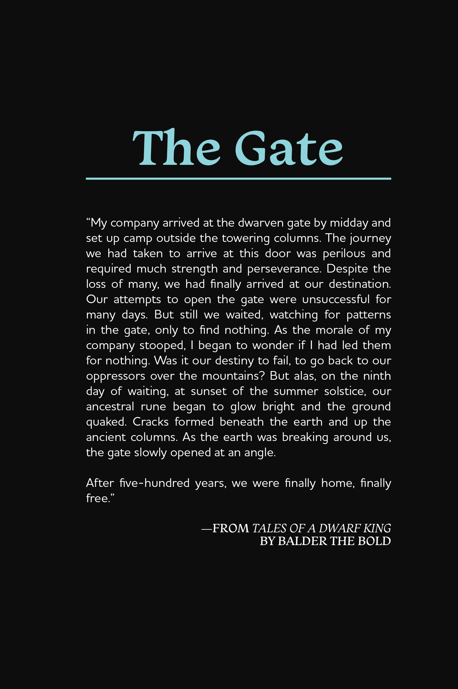
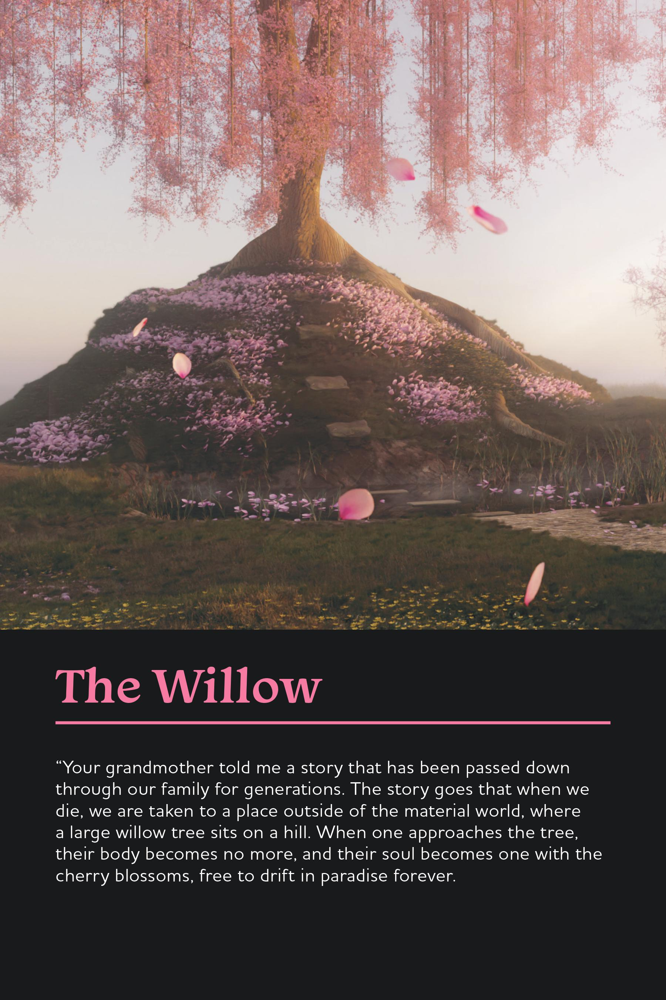
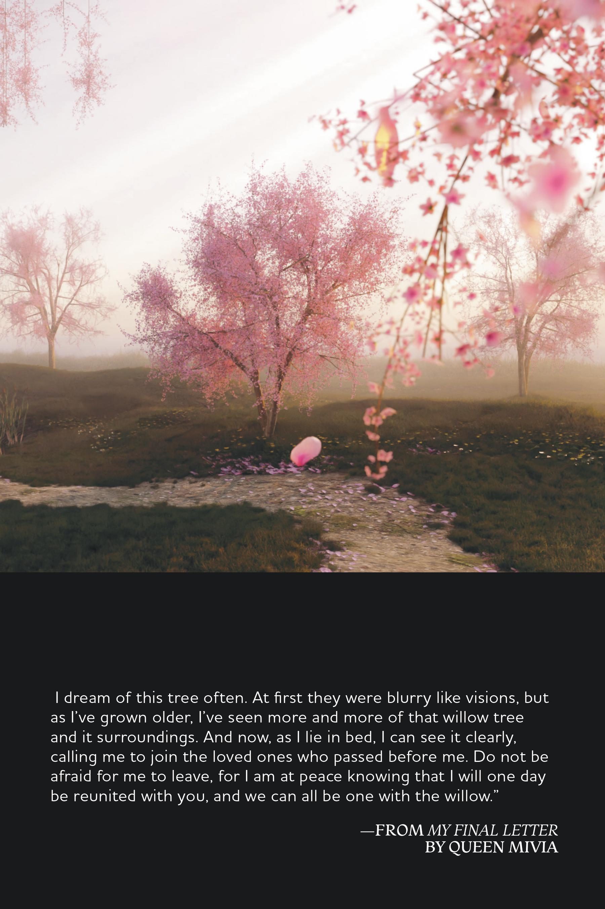
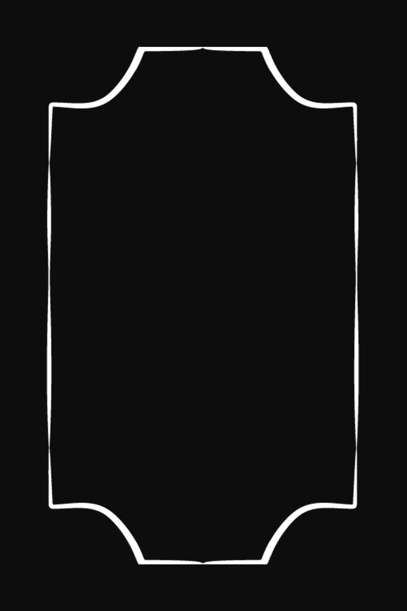
Process


Fantasy is one of my favorite genres, so I was eager to create my own fantasy world. It was important that each landscape felt distinct from one another, but could still exist within one big world; I wanted each one to have a different visual tone. The visuals of the landscapes were inspired by various fantastical worlds, including "The Lord of the Rings" and "The Witcher".
The concept of including fictional book excerpts comes from Frank Herbert's science fiction novel, "Dune". Each chapter in "Dune" begins with a short passage from a book that exists in the world of "Dune", giving context and background to the events of each chapter. I thought this idea would work well for my book, as it allows the reader to get a peek into the world given how short the book is. Each passage, accompanied by the landscape, is meant to give off a different tone, showcasing how diverse the world is with its inhabitants and locations.
The concept of including fictional book excerpts comes from Frank Herbert's science fiction novel, "Dune". Each chapter in "Dune" begins with a short passage from a book that exists in the world of "Dune", giving context and background to the events of each chapter. I thought this idea would work well for my book, as it allows the reader to get a peek into the world given how short the book is. Each passage, accompanied by the landscape, is meant to give off a different tone, showcasing how diverse the world is with its inhabitants and locations.